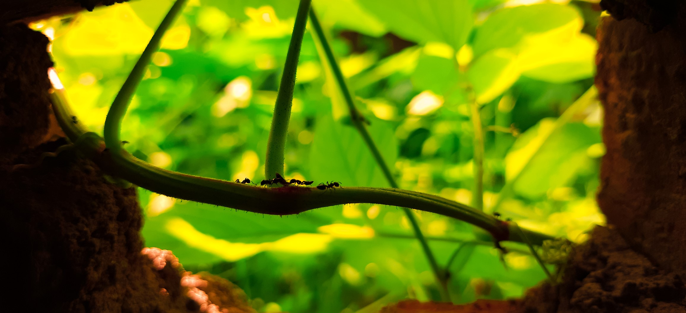

The Bridege
of Ants
Photography has been the hobbie that makes me creative and look
for more versatile angles while working, it gives me a unique stand
in this digital world.

This photograph is special for me, the way it depicts the beauty of Macro photography along with a great frame. The ants using a stem branch of a creeper plant to move. Ants have always been a special part in our studies with the motivation story of ants of keep moving no matter what obstacles are there in front.
I have always wanted to bring my works to life.